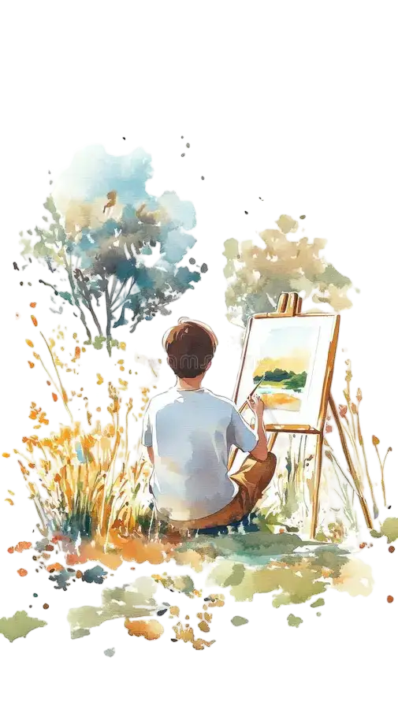
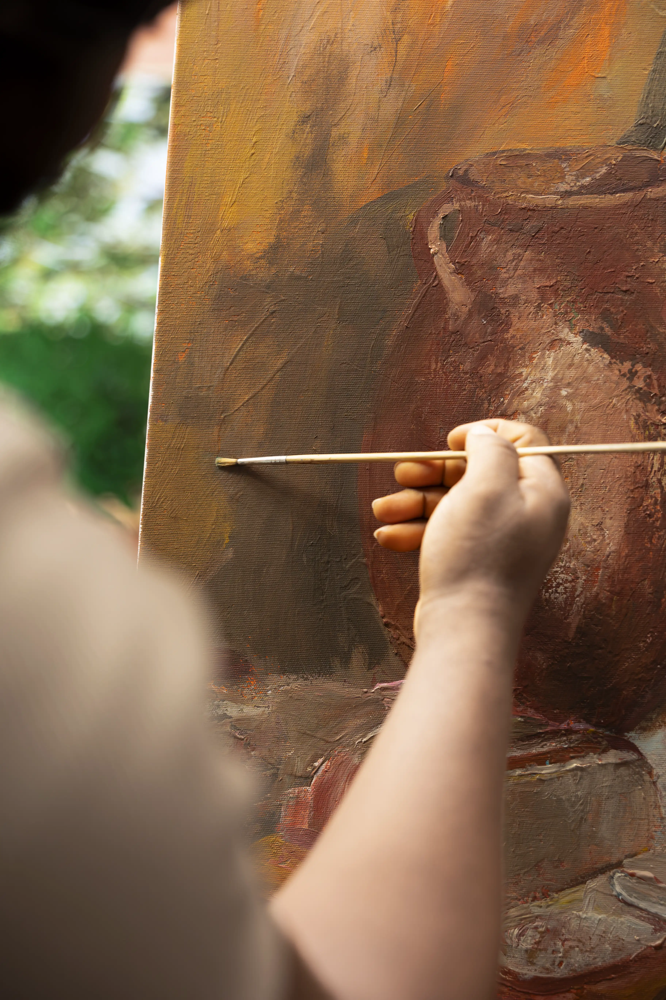
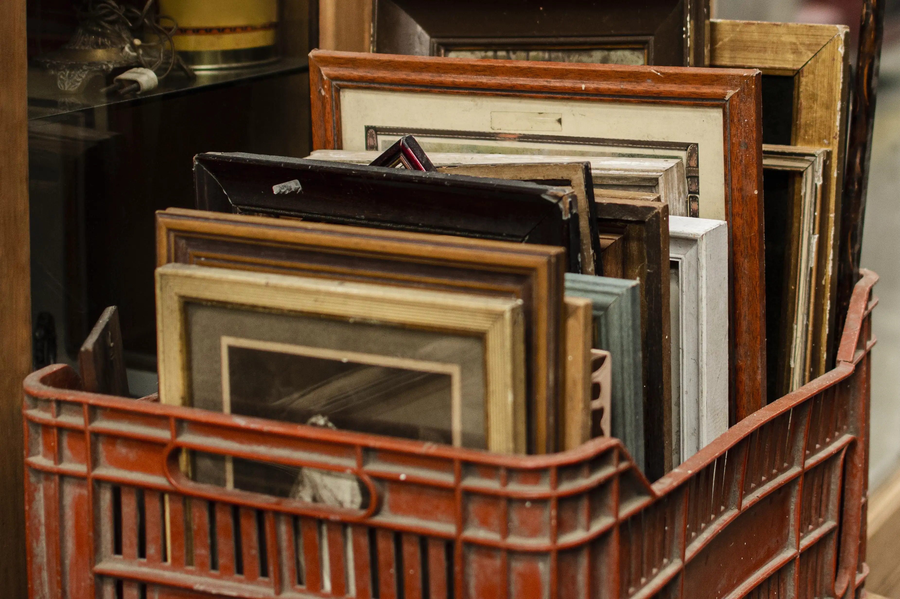
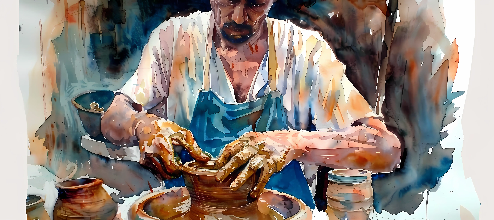

Know my services
Discover the portrait services I offer and find the perfect fit for the piece you have in mind.
Discover the portrait services I offer and find the perfect fit for the piece you have in mind.

At One Brush Paintings, every service is built around a single idea: capturing personality on canvas. Explore what I offer below.

A hand-painted portrait made exclusively for you, from a single reference photo to a finished canvas. Every detail, from the brushstrokes to the color palette, is carefully chosen to reflect the personality of the person or moment being portrayed. Ideal for gifts, family keepsakes, or a piece that simply deserves to be remembered forever.

Old or damaged paintings brought back to life with careful, traditional restoration techniques.

Original illustrations for books, gifts, or personal projects, created entirely by hand. Whether you need a single striking image or a full set of consistent artwork, each illustration is developed from your idea through sketches and revisions until it matches exactly what you had in mind.
Every piece is made with organic materials and delivered with care, wherever you are.
Every portrait is homemade with organic materials and fully customized.